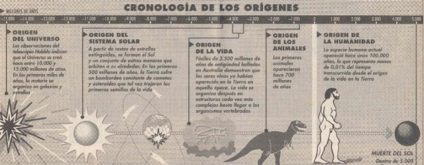

Origen del Universo
1. Inflación
2. Formación de núcleos y átomos
3. Materia oscura
4. La convergencia de la física y la
cosmología
Origen del Universo, aparición en un momento definido del pasado de toda la materia y energía existentes en la actualidad; se trata de un acontecimiento postulado por la teoría cosmológica generalmente aceptada. Los astrónomos están convencidos en su gran mayoría de que el Universo surgió en un instante definido, entre 12.000 y 20.000 millones de años antes del momento actual. Los primeros indicios de este hecho provinieron del descubrimiento por parte del astrónomo estadounidense Edwin Hubble, en la década de 1920, de que el Universo se está expandiendo y los cúmulos de galaxias se alejan entre sí. La teoría de la relatividad general propuesta por Albert Einstein también predice esta expansión. Si los componentes del Universo se están separando, esto significa que en el pasado estaban más cerca, y retrocediendo lo suficiente en el tiempo se llega a la conclusión de que todo salió de un único punto matemático (lo que se denomina una singularidad), en una bola de fuego conocida como Gran Explosión o Big Bang. El descubrimiento en la década de 1960 de la radiación de fondo cósmica, interpretada como un ‘eco’ del Big Bang, fue considerado una confirmación de esta idea y una prueba de que el Universo tuvo un origen.
No hay que imaginarse el Big Bang como la explosión de un trozo de materia situado en el vacío. En el Big Bang no sólo estaban concentradas la materia y la energía, sino también el espacio y el tiempo, por lo que no había ningún lugar ‘fuera’ de la bola de fuego primigenia, ni ningún momento ‘antes’ del Big Bang. Es el propio espacio lo que se expande a medida que el Universo envejece, alejando los objetos materiales unos de otros.
La teoría inflacionaria, teoría estándar del origen del Universo, implica un proceso denominado inflación, y se basa en una combinación de las ideas cosmológicas con la teoría cuántica y la física de las partículas elementales. Si tomamos como tiempo cero el momento en que todo surgió a partir de una singularidad, la inflación explica cómo una ‘semilla’ extremadamente densa y caliente que contenía toda la masa y energía del Universo, pero de un tamaño mucho menor que un protón, salió despedida hacia afuera en una expansión que ha continuado en los miles de millones de años transcurridos desde entonces. Según la teoría inflacionaria, este empuje inicial fue debido a procesos en los que una sola fuerza unificada de la naturaleza se dividió en las cuatro fuerzas fundamentales que existen hoy: la gravitación, el electromagnetismo y las interacciones nucleares fuerte y débil. Esta breve descarga de antigravedad surgió como una predicción natural de los intentos de crear una teoría que combinara las cuatro fuerzas
La fuerza inflacionaria sólo actuó durante una minúscula fracción de segundo, pero en ese tiempo duplicó el tamaño del Universo 100 veces o más, haciendo que una bola de energía unas 1020 veces más pequeña que un protón se convirtiera en una zona de 10 cm de extensión (aproximadamente como una naranja grande) en sólo 15 × 10-33 segundos. El empuje hacia afuera fue tan violento que, aunque la gravedad está frenando las galaxias desde entonces, la expansión del Universo continúa en la actualidad.
Aunque siguen debatiéndose los detalles del funcionamiento de la inflación, los cosmólogos creen entender todo lo que ha ocurrido con posterioridad, desde que el Universo tenía una diezmilésima de segundo de antigüedad, cuando la temperatura era de un billón de grados y la densidad era en todas partes la que existe actualmente en el núcleo de un átomo. En esas condiciones, las partículas materiales como electrones o protones eran intercambiables con energía en forma de fotones (radiación). Los fotones perdían energía, o desaparecían por completo, y la energía perdida se convertía en partículas. Al contrario, las partículas desaparecían y su energía reaparecía como fotones, según la ecuación de Einstein E = mc2. Aunque estas condiciones son extremas en comparación con nuestra experiencia cotidiana, corresponden a energías y densidades estudiadas rutinariamente en los actuales aceleradores de partículas: por eso los teóricos están convencidos de entender lo que ocurría cuando todo el Universo se hallaba en ese estado
A medida que el Universo se iba enfriando, los fotones y las partículas materiales ya no tenían suficiente energía para ser intercambiables, y el Universo, aunque seguía expandiéndose y enfriándose, empezó a estabilizarse en un estado en el que el número de partículas permanecía constante (materia estable bañada en el calor de la radiación). Una centésima de segundo después del ‘principio’, la temperatura había caído hasta los 100.000 millones de grados, y los protones y neutrones se habían estabilizado. Al principio había el mismo número de protones que de neutrones, pero durante un tiempo las interacciones entre estas partículas y los electrones de alta energía convirtieron más neutrones en protones que protones en neutrones. Una décima de segundo después del principio, ya sólo había 38 neutrones por cada 62 protones, y la temperatura había bajado a 30.000 millones de grados. Algo más de un segundo después del nacimiento del Universo sólo había 24 neutrones por cada 76 protones, la temperatura había descendido hasta 10.000 millones de grados, y la densidad de todo el Universo ‘sólo’ era 380.000 veces superior a la del agua.
Para entonces, el ritmo de los cambios estaba decelerando. Fueron necesarios casi 14 segundos desde el principio para que el Universo se enfriara hasta los 3.000 millones de grados, momento en que las condiciones fueron lo suficientemente suaves para permitir los procesos de fusión que se producen en una bomba de hidrógeno (véase Armas nucleares) o en el corazón del Sol. En esa fase, los protones y neutrones individuales empezaron a permanecer unidos al colisionar, formando un núcleo de deuterio (hidrógeno pesado) antes de separarse por efecto de nuevas colisiones. Algo más de tres minutos después del principio, el Universo era unas 70 veces más caliente que el centro del Sol en la actualidad. Se había enfriado hasta sólo 1.000 millones de grados. Para entonces sólo había 14 neutrones por cada 86 protones, pero llegados a ese punto los núcleos de deuterio no sólo podían formarse sino también sobrevivir como núcleos estables a pesar de las colisiones. Esto hizo posible que algunos neutrones de la bola de fuego del Big Bang sobrevivieran hasta el momento actual.

Un segundo después del Big Bang ya habían surgido cuatro fuerzas que aún gobiernan el Universo. Estas fuerzas son la gravitación, el electromagnetismo y las interacciones nucleares débil y fuerte. El Universo empezó en un estado de densidad y temperatura inconcebiblemente elevadas, y es muy probable que entonces existiera una única fuerza. A medida que el Universo se expandía y enfriaba, esa fuerza dio lugar a la gravedad, que afecta a todas las partículas, y a una ‘gran fuerza unificada’. Después de la era inflacionaria, en la que el Universo multiplicó repetidamente su tamaño a un ritmo fabuloso, la gran fuerza unificada originó la interacción nuclear fuerte que conocemos actualmente, y que es la responsable de mantener unidos los núcleos atómicos, y la fuerza electrodébil, una combinación de electromagnetismo e interacción nuclear débil. Cuando el Universo tenía aproximadamente 10-8 s (una cienmillonésima de segundo) de antigüedad, la fuerza electrodébil se dividió en la interacción nuclear débil, que rige la radiactividad, y el electromagnetismo.
2. Formación de núcleos y átomos
Desde ese momento hasta aproximadamente cuatro minutos después del principio tuvieron lugar una serie de reacciones nucleares que convirtieron algunos de los protones (núcleos de hidrógeno) y núcleos de deuterio en núcleos de helio (cada uno con dos protones y dos neutrones), junto con trazas de otros núcleos ligeros, en un proceso conocido como nucleosíntesis. Sólo algo menos del 25% del material nuclear terminó en forma de helio, y el resto (salvo una fracción de un 1%) en forma de hidrógeno. No obstante, la temperatura aún era demasiado alta para que estos núcleos pudieran capturar electrones y formar átomos estables.
Algo más de 30 minutos después del principio, la temperatura del Universo era de 300 millones de grados, y la densidad había disminuido espectacularmente hasta ser sólo un 10% de la del agua. Los núcleos de hidrógeno y helio, con carga positiva, coexistían con electrones libres (de carga negativa); debido a su carga eléctrica, tanto los núcleos como los electrones seguían interaccionando con los fotones. La materia se encontraba en un estado denominado plasma, similar al estado de la materia que existe en la actualidad en el interior del Sol.
Esta actividad prosiguió durante unos 300.000 años, hasta que el Universo en expansión se enfrió hasta la temperatura que existe hoy en la superficie del Sol, unos 6.000 ºC. Esa temperatura era suficientemente fría para que los núcleos empezaran a capturar electrones y formar átomos. Durante los 500.000 años siguientes, todos los electrones y núcleos se unieron de este modo para formar átomos de hidrógeno y helio. Como los átomos son en su conjunto eléctricamente neutros, dejaron de interaccionar con la radiación. El Universo se hizo transparente por primera vez, al poder pasar los fotones de radiación electromagnética junto a los átomos de materia sin ser perturbados. Es esta radiación, enfriada ya hasta unos -270 ºC (3 K), la que detectan los radiotelescopios como microondas de la radiación de fondo. Esta radiación no ha interaccionado con la materia desde unos cientos de miles de años después del principio, y todavía lleva la huella (en forma de ligeras diferencias en la temperatura de radiación, según las distintas direcciones del cielo) de la distribución de la materia en aquel tiempo. Las estrellas y galaxias no pudieron empezar a formarse hasta aproximadamente un millón de años después del principio, una vez que la materia y la radiación se ‘desacoplaran’ según se ha descrito.
3. Materia oscura
Hay otro componente del Universo, además de la materia nuclear y la radiación, que surgió del Big Bang y desempeñó un importante papel en la formación de galaxias. Al igual que las teorías de la gran unificación predicen la inflación, que es lo que los cosmólogos necesitan para que el Universo ‘arranque’, estas teorías también predicen la existencia de otras formas de materia, que resultan ser precisamente lo que necesitan los cosmólogos para explicar la existencia de estructura en el Universo. Los astrónomos saben desde hace décadas que hay mucha más materia en el Universo de la que podemos ver. La existencia de esta materia se manifiesta a través de la atracción gravitatoria que ejerce sobre las galaxias y cúmulos de galaxias visibles, lo que afecta a la forma en que se mueven. Al menos hay 10 veces más materia oscura en el Universo que materia luminosa, y puede que haya hasta 100 veces más. No es posible que toda esta materia se halle en la forma de la materia que conocemos (a veces llamada materia bariónica), porque en ese caso no funcionaría el modelo del Big Bang resumido aquí. En particular, la cantidad de helio producida en el Big Bang no coincidiría con la cantidad observada en las estrellas más antiguas, que se formaron poco después.
Las teorías de la gran unificación predicen que en la primera fracción de segundo de la existencia del Universo también debería haberse producido a partir de la energía una gran cantidad de materia de otro tipo (llamada materia oscura). Esta materia tendría la forma de partículas que no participan en interacciones electromagnéticas ni en ninguna de las dos interacciones nucleares, y sólo se ven afectadas por la cuarta fuerza fundamental, la gravedad. Estas partículas se conocen como WIMP, acrónimo inglés de ‘partículas masivas de interacción débil’.
La única forma en que las WIMP afectan al tipo de materia de la que estamos formados (materia bariónica) es a través de la gravedad. La consecuencia más importante de ello es que, cuando el Universo surgió del Big Bang y la materia ordinaria y la radiación se desacoplaron, las irregularidades en la distribución de las WIMP en el espacio crearon enormes ‘baches’ gravitatorios que frenaron el movimiento de las partículas de materia bariónica. Esto habría posibilitado la formación de estrellas, galaxias y cúmulos de galaxias, y explicaría la distribución actual de los cúmulos de galaxias en el Universo, en una estructura esponjosa formada por hojas y filamentos arrollados alrededor de ‘burbujas’ oscuras carentes de galaxias.
4. La convergencia de la
física y la cosmología
Aunque quedan por averiguar muchos detalles —en particular, la forma exacta en que se forman las galaxias—, este modelo estándar de las primeras etapas evolutivas del Universo descansa sobre bases sólidas. Las teorías de la gran unificación predicen tanto la inflación como la presencia de materia oscura, sin las cuales la cosmología tendría graves problemas. Sin embargo, estas teorías fueron desarrolladas de forma aislada de la cosmología, sin pensar que sus resultados podían aplicarse al Universo en su conjunto. Las medidas de la actual radiación de fondo revelan la temperatura que existía en el Universo en la fase de nucleosíntesis, y llevan a la predicción de que el 25% de la materia de las estrellas antiguas debería encontrarse en forma de helio, lo que coincide con las observaciones. Además, la estructura detallada de ondulaciones en la radiación de fondo, detectada por el satélite COBE, revela la influencia de materia oscura que actuó gravitatoriamente sobre la materia luminosa algunos cientos de miles de años después del principio y formó el tipo de estructuras a gran escala que corresponde a la distribución actual a gran escala de las galaxias. La coincidencia entre los hallazgos de la física de partículas (el mundo de lo extremadamente pequeño) obtenidos en experimentos terrestres y la estructura del Universo en expansión (el mundo de lo extremadamente grande) deducida de las observaciones astronómicas es lo que convence a los cosmólogos de que, si bien quedan detalles por resolver, la idea general del origen del Universo es esencialmente correcta.
